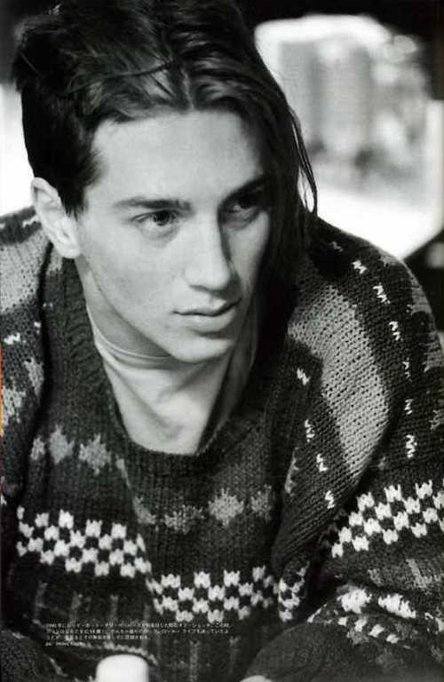
John Anthony Frusciante to znakomity amerykański muzyk, genialny gitarzysta, który wypracował sobie uznanie na światowej scenie muzycznej. Pomimo, że znany jest głównie jako były gitarzysta Red Hot Chili Peppers, swoją osobą łączy także takie zespoły jak Ataxia, The Mars Volta, Speed Dealer Moms, Swahili Blonde. To człowiek daleki od stereotypów, całą dusza oddany muzyce i pracy nad tworzeniem coraz to nowych projektów. Jako artysta solowy tworzy muzykę znacznie wykraczającą poza powszechnie znane formy, której nie można odmówić oryginalności. Liczy się dla niego głównie jego własna muzyka i jako artysta, nie godząc się na żadne kompromisy uparcie podąża swoją drogą. Przez dziennikarzy magazynu „Rolling Stone” uznany został za jednego z najwybitniejszych gitarzystów wszech czasów.
Urodzony 5 marca 1970 roku w Nowym Jorku, syn pianisty wykształconego w nowojorskiej Juilliard School i wokalistki, która przerwała karierę, aby zająć się wychowaniem dzieci. Po separacji rodziców wraz z matką John zamieszkał w kalifornijskim Santa Monica. Gry na gitarze uczył się zajeżdżając, jak sam wspomina, nieskończoną ilość sztuk płyt „GI” punkowego zespołu The Germs. Kilka lat później odkrył twórczość Franka Zappy a także J.Hendrixa, J.Page, Jeffa Beck’a, King Crimson, Captain’a Beefheart’a, Syd’a Barrett’a. Interesował się alternatywnym rockiem brytyjskim, muzyką elektroniczną i krautrockiem. Kolejną fascynacją młodego Johna stał się zespół Red Hot Chili Peppers, którego koncert zobaczył po raz pierwszy w Variety Arts Center w Los Angeles, a ówczesny gitarzysta zespołu Hillel Slovak oczarował go swoją grą na gitarze i stał się jego ówczesnym idolem. Frusciante poznał wszystkie utwory z trzech albumów Red Hot Chili Peppers oraz partie solowe Slovaka. Młody Frusciante zdał sobie sprawę, że chce zostać gwiazdą rocka, zażywać narkotyki i zdobywać dziewczyny. Przeprowadził się więc do Los Angeles, gdzie podjął naukę w Guitar Institute of Technology (GIT), szybko jednak zrezygnował z uczęszczania na zajęcia ponieważ wszystko o czym tam mówiono było mu już od dawna znane. Zrozumiał, że nie słucha rad nauczycieli, gdyż jest wolny w tworzeniu własnej muzyki, więc postanowił dalej zgłębiać tajniki gry na gitarze samodzielnie. Jego pociąg do używek uniemożliwił mu grę w zespole Franka Zappy, który rygorystycznie zabronił muzykom swojego zespołu zażywania narkotyków i picia alkoholu, a to skutecznie zniechęciło zafascynowanego błogim życiem w stylu sex, drugs and rock’and’roll młodego Johna. Jego chęć zażywania narkotyków nie przeszkadzała natomiast chłopakom z Red Hot Chili Peppers. Z członkami grupy zapoznał Frusciante były perkusista zespołu D. H. Peligro, z którym John już wcześniej grywał w klubach.
Marzenia stają się rzeczywistością
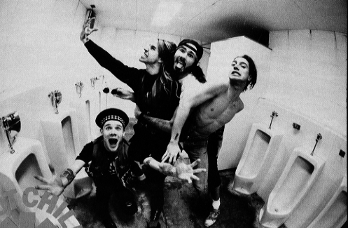
Gdy w 1988 roku zmarł z przedawkowania heroiny gitarzysta Red Hot Chili Peppers Hillel Slovak Flea zaproponował Anthony’emu Kiedis’owi przesłuchanie Frusciante. Bardzo spodobał im się styl gry Johna oraz znajomość całego repertuaru zespołu i mimo, że miał dopiero osiemnaście lat, szybko ogłosili go nowym gitarzystą RHCP.
John Frusciante swoją muzyczną karierę rozpoczął więc w bardzo młodym wieku. Stał się członkiem zespołu, którego był zagorzałym fanem i powoli zaczął spełniać swe marzenia o zostaniu gwiazdą rocka.
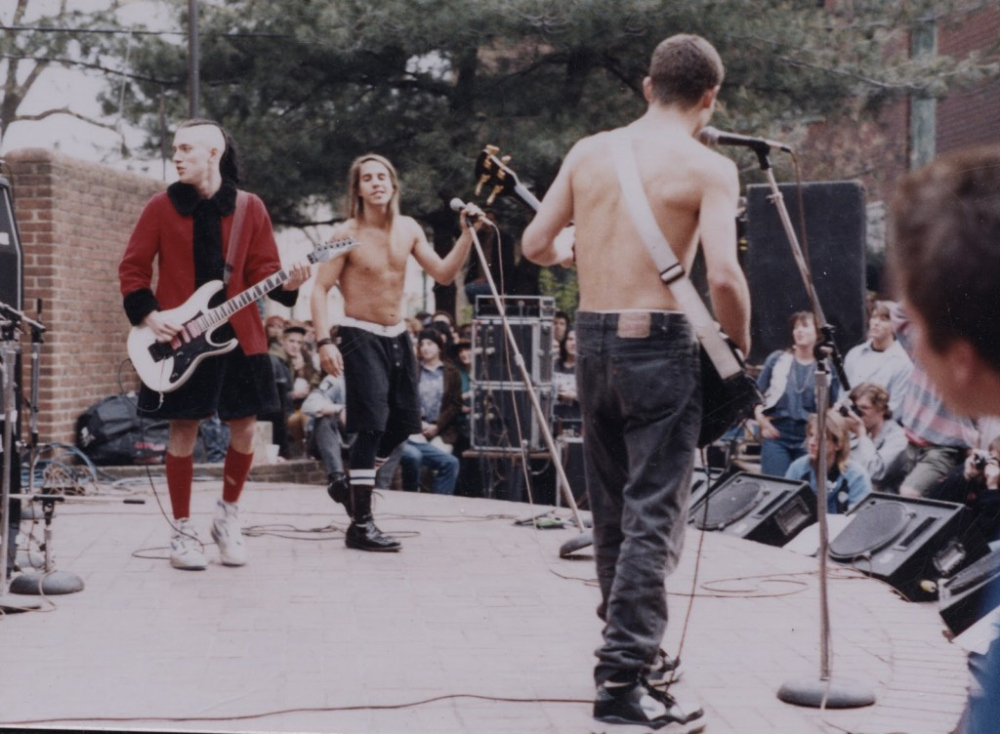
16 sierpnia 1989 zostaje wydana pierwsza płyta z jego udziałem, „Mother’s Milk”, która staje się sukcesem komercyjnym zespołu. Ale prawdziwy sukces i sława miały dopiero nadejść. Przyszedł czas na kolejną płytę i rozpoczęto pracę nad albumem „Blood Sugar Sex Magik”. Podczas tej sesji nagraniowej Frusciante rozpoczyna swoją przygodę z narkotykami, co jak twierdzi pomaga mu stać się bardziej kreatywnym i wraz z Flea spędzają większość czasu na paleniu marihuany. W tym czasie wspólnie ze Stephenem Perkinsem z Jane’s Addiction stworzyli zespół nazwany The Three Amoebas, który zarejestrował nagrania z ich wspólnych jamów. Materiał ten nigdy jednak nie został wydany.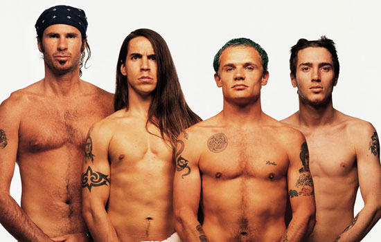
Wydany w 1991 roku „Blood Sugar Sex Magik”, wyprodukowany przez legendarnego Ricka Rubina stał się hitem zaraz po premierze albumu, docierając do trzeciego miejsca listy przebojów magazynu „Billboard”. Album sprzedał się w nakładzie 7 milionów w USA i ponad 13 milionów na całym świecie. „To nowy Jimi Hendrix” – powiedział o Johnie Frusciante Glenn Hughes. Frusciante dał się wtedy poznać jako utalentowany muzyk i doskonały gitarzysta. Jego wkład w twórczość zespołu sprawiły, że Red Hot Chili Peppers wzbiło się na szczyty sławy i popularności, wszystko zaczynało się układać.
Nie tego oczekiwałem – „Sława bywa męcząca i nudna”
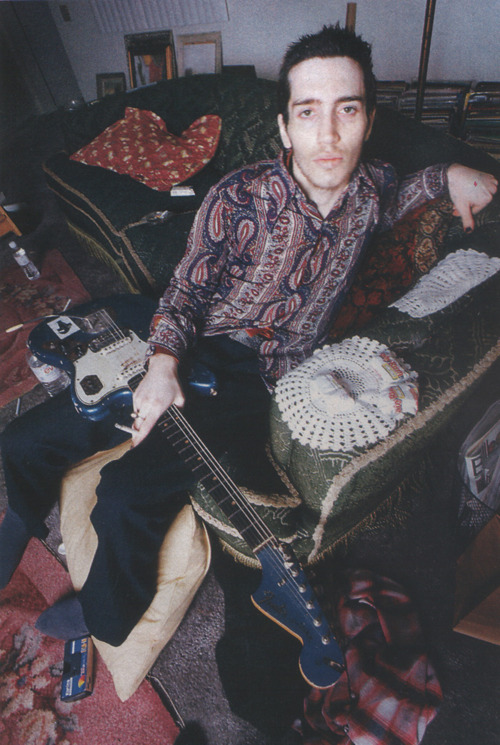
Sukces przyszedł szybciej niż można było tego oczekiwać, czym John był zaskoczony ale jednocześnie zdegustowany. Jego artystyczna dusza broniła się przed komercją i zauważył, ze przestało go interesować bycie gwiazdą rocka i zdobywanie popularności. Uważał, że droga zespołu do popularności była zbyt krótka, a poziom sławy zbyt wysoki. Nie spodobała mu się ta nieoczekiwana sława i medialny rozgłos wokół zespołu, tęsknił za koncertami w małych klubach dla niewielkiej publiczności. W jednym z wywiadów mówił:
Sława, brak jedności w zespole, ciągłe spięcia i kłótnie z Anthonym Kiedisem okazały się dla młodego muzyka zbyt ciężkie do udźwignięcia. Zaczął sabotować koncerty, celowo mylić się podczas gry lub grać odwrócony tyłem do publiczności.Nie interesował go w ogóle kontakt z pozostałymi członkami grupy na scenie. Głosy w jego głowie nawoływały go do opuszczenia zespołu a on nie wiedział jaką podjąć decyzję, jak interpretować swoje uczucia. Jego marzenie bycia gwiazdą rocka nie spełniło jego oczekiwań, a koncerty przed wielką publicznością okazały się być nudnym i męczącym rytuałem powtarzanym co wieczór.
Ja nie potrzebuję być w radiu. Nie potrzebuję być w MTV.
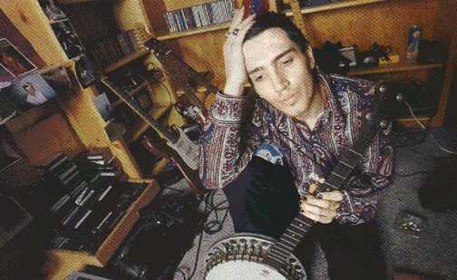
Wszystko to wykańczało go psychicznie. Wyczerpany, na skraju postradania zmysłów odszedł z zespołu w 1992 roku podczas trasy koncertowej po Japonii, informując o tym tuż przed jednym z koncertów. Namawiany przez pozostałych członków grupy do pozostania w zespole stanowczo odmówił mówiąc:
Powiedzcie wszystkim, że zwariowałem.
Następnego ranka wrócił do Los Angeles, zamknął się w swoim domu i na blisko sześć lat pogrążył się w absolutną narkomanię.
Narkotyki stały się nieodłączną częścią jego życia, brał ile tylko mógł, gdyż heroina stała się dla niego lekiem na postępującą depresję. Otwarcie przyznawał w wywiadach, że jest uzależniony, gdyż:
Narkotyki są jedynym sposobem, by być pewnym, że ma się kontakt z pięknem, zamiast pozwolić całej brzydocie świata, by złamała twoją duszę.
Intensywne zażywanie heroiny oraz kokainy przez dłuższy czas doprowadziły do zmian w jego osobowości. Pozbawiony chęci do życia nie mógł jeść, spać a nawet nie potrafił już grać na gitarze. Ze złamanym sercem i kompletną pustką w duszy uważał, że jego życie jest skończone i nie jest już więcej w stanie tworzyć muzykę.
mnie kompletnie nic, jedynym pewnikiem było to, że nigdy nie sięgnę po gitarę i nie będę robił muzyki. To był koniec.
John pogrążał się w nałogu coraz bardziej, przez kolejnych kilka lat, niemal w ogóle nie wychodził z domu. Johnny Depp wraz z Gibby’m Haynes’em z The Butthole Surfers ukazali stan jego domu w nakręconym amatorsko dokumencie „Stuff”, na którym można zobaczyć jak staczający się muzyk swoje ekskluzywne mieszkanie, w krótkim czasie zamienił w istną melinę, a on sam żyje w całkowitym oderwaniu od rzeczywistości. Gitarzysta, który niedawno został współautorem znanego wszystkim „Under the Bridge”, staczał się z każdym dniem na kompletne życiowe dno zdążając nieuchronnie do narkotykowej śmierci.
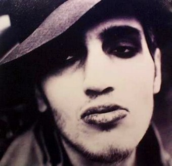
Pod koniec osiągnąłem punkt, w którym nie czułem się już Johnem Frusciante. Czułem się jak chłopak, który patrzy na wiszący na ścianie plakat Johna Frusciante i wyobraża sobie, że nim jest. Leżałem całymi dniami na kanapie, nie wychodziłem z domu, gapiłem się w sufit.
Dom ostatecznie uległ zniszczeniu w trakcie pożaru, który zresztą sam spowodował. On sam został poważnie poparzony, ogień strawił również kolekcję gitar i parę nagranych, niewydanych utworów.
Jednak i ten film nie przemówił do wyobraźni Frusciante, w dalszym ciągu staczał się z premedytacją, całkowicie świadomie i na własne życzenie. Pomimo ciężkiego uzależnienia poświęcił się wówczas pisaniu nowel, a także scenariuszy filmowych, a szukając innych niż muzyka środków wyrazu i chcąc mieć środki na narkotyki oraz spłacenie długów u dilerów, Frusciante zaczął malować obrazy, które wystawiał w galeriach. Psychodeliczne obrazy powstałe w tamtym czasie były odzwierciedleniem zagubienia i pustki w jakiej się wtedy znajdował. Obrazy te uratowały mu wówczas życie nie tylko pod względem finansowym, samo malowanie, jak wspomina – było ukojeniem dla jego duszy. Dzięki niemu odnajdywał strzępy wewnętrznego spokoju, a chwile spędzone na malowaniu z małą Clarą, córką Flea, dały mu siłę do przeżycia kolejnych kilku lat.
Zachęcony przez przyjaciół, w 1994 roku Frusciante decyduje się na debiut solowy wydając płytę „Niandra LaDes And Usually Just A T-Shirt”. Nagrany w całości na czterościeżkowym magnetofonie album zawiera mocno awangardową muzykę. Został on także samodzielnie przez niego zmiksowany i wyprodukowany. Płyta jednak spotkała się z niewielkim sukcesem komercyjnym, sprzedała się w zaledwie 45 tysiącach egzemplarzy. Po wydaniu albumu Frusciante udzielił wywiadu, w którym powiedział, że ten album zostanie zrozumiany jedynie przez tych ludzi, którzy „są w stanie wprowadzić swój mózg w stan odurzenia narkotykowego.” Przez krótki czas po wydaniu tego albumu John szukał muzyków celem wyruszenia w trasę koncertową po Stanach Zjednoczonych, jednak ostatecznie porzucił ten pomysł, głównie ze względu na pogarszający się stan zdrowia.
Na skraju całkowitego wyczerpania i upadku, potrzebując pieniędzy na dalszą narkotykową podróż w 1997 roku wydaje kolejną płytę „Smile From The Streets You Hold”, która prowadzi nas w najmroczniejsze zakamarki duszy człowieka o kompletnie złamanym sercu. Wydaje się, że Frusciante poprzez tą muzykę wyrzuca z siebie „całą brzydotę tego świata” i jest dla niego swego rodzaju wewnętrznym oczyszczeniem. Dwa lata później album został wycofany ze sprzedaży.
Te dwie płyty są różnie oceniane. Jedni stawiają je obok klasyków rocka, uważając album „Niandra LaDes And Usually Just A T-Shirt” za jeden z ważniejszych albumów rockowych lat dziewięćdziesiątych, inni uważają, że kompletnie nie nadają
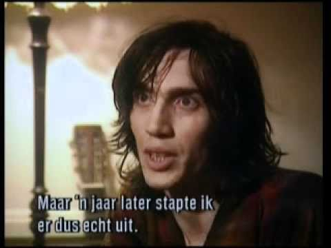
się do słuchania traktując je jako przerażający i dziwaczny muzyczny eksperyment. Wielu fanów przekreśliło Frusciante wtedy jako muzyka.
Krańcowo załamany, bez domu, tułając się po hotelach, przeraźliwie chudy, z zepsutymi zębami, otarłszy się o śmierć w styczniu 1998 roku, po namowach przyjaciela Boba Forresta decyduje się na kurację odwykową w klinice Las Encinas w Pasadenie. W szpitalu lekarze stwierdzają, że to cud, że on jeszcze żyje, mimo tak poważnego zakażenia krwi a jedynym sposobem na zatrzymanie śmiertelnej infekcji ust jest usunięcie wszystkich zębów i zastąpienie ich protezami. Przechodzi również przeszczep skóry na ramionach, aby zakryć blizny i ropnie, powstałe po wstrzykiwanej heroinie. Podjęta walka z uzależnieniem zakończyła się sukcesem. Po opuszczeniu kliniki Frusciante całkowicie zmienił tryb życia. Zaczął ćwiczyć jogę, zmienił dietę, ograniczył aktywność seksualną a także zainteresował się sferą duchową. Przebyte doświadczenia pozwoliły mu zmienić nastawienie do narkotyków:
Czuję się dużo lepszym człowiekiem, niż się czułem, gdy byłem pod wpływem narkotyków.
Pomimo, że nie lubi wspominać okresu ciężkiego uzależnienia, nie uważa go za stracony czas. Twierdzi, że był to okres odrodzenia, w którym odnalazł siebie i pozwolił mu oczyścić umysł. Będąc już wolnym od uzależnienia nastąpiła w nim prawdziwa przemiana, której najważniejszą cechą okazała się terapia przez niemal szaleńczą pracę.
Dream of Californication… 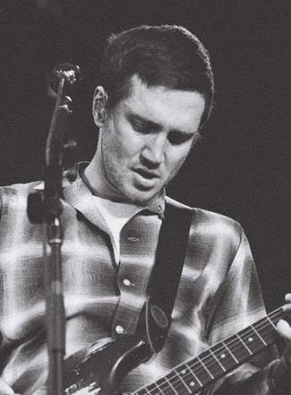
W 1998 roku zespół Red Hot Chili Peppers rozstał się z gitarzystą Dave’m Navarro, w zespole nie działo się najlepiej, Flea wiedząc, że John jest już całkowicie wolny od uzależnień, w jego powrocie upatrywał szansę dla grupy. Mówił do Anthony’ego, że:
jedyna droga do potrzymania zespołu to sprowadzenie Johna jeszcze raz.
Również Anthony, po tym jak odwiedził starego przyjaciela w klinice podczas odwyku wiedział, że John jest już zupełnie innym człowiekiem niż był w chwili, gdy opuszczał zespół. Wzajemnie wybaczyli sobie dawne urazy i nieporozumienia zapraszając go ponownie do zespołu. Wszystko powoli wracało do normy. Fani wspaniale przyjęli wiadomość, że John Frusciante znów nagrywa z zespołem Red Hot Chili Peppers. John natomiast na nowo objawił się jako niezwykle kreatywny i jeszcze bardziej twórczy niż kiedyś muzyk.
To najlepszy, najbardziej twórczy okres w moim życiu. Wreszcie znowu mogę nazwać siebie Johnem Frusciante.
8 czerwca 1999 roku zostaje wydany album „Californication”, debiutując na piątym miejscu na liście „Billboard 200”. Płyta sprzedała się w nakładzie ponad 15 milionów egzemplarzy na całym świecie, odnosząc największy sukces spośród wszystkich albumów grupy, ponownie wynosząc zespół na szczyty popularności i sławy.
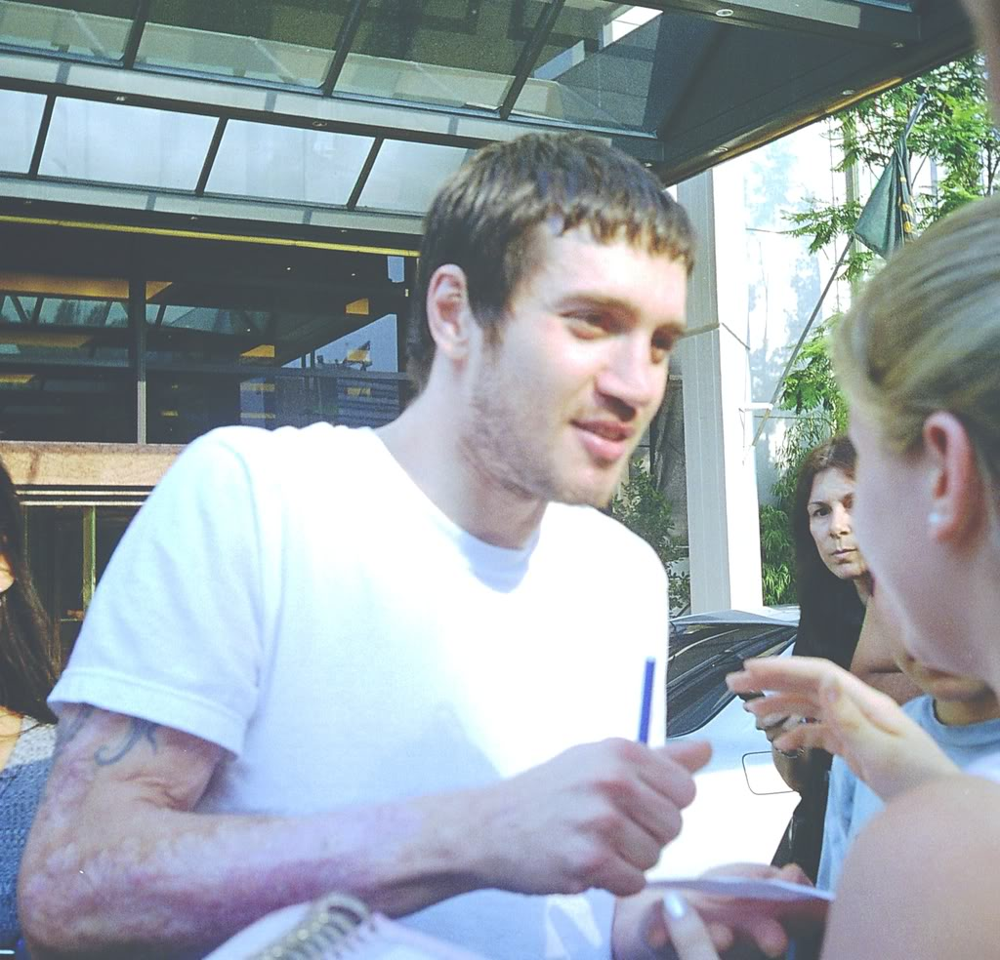
Część krytyków szeroko komentowała ten sukces i łączyła go z powrotem Frusciante do zespołu.
Oczywistym powodem reaktywacji RHCP i ich wielkiego sukcesu jest powrót do formacji Johna Frusciante. Jest on kluczową postacią i niezbędnym gitarzystą. Stanowi kwintesencję muzyki i wizerunku grupy.
„Californication” jest klasycznym albumem zespołu podsumowującym ich twórczość.
Odzyskawszy szczęście, spokój i chęć do życia John rozpoczął nowy etap w swoim życiu, powrócił do komponowania własnych utworów.
W 2001 roku zostaje wydany trzeci solowy album muzyka „To Record Only Water for Ten Days”, który już znacznie różni się od dwóch wcześniejszych. Utwory znormalniały dowodząc zmian jakie zaszły w jego życiu i twórczości. Równocześnie z pracą nad „To Record Only Water for Ten Days” powstał album „From the Sounds Inside”, który został udostępniony fanom przez artystę w internecie, jako darmowy album.
W swoich wywiadach Frusciante często opowiada o kontakcie z duchami czy też istotami z innych wymiarów, o głosach w swojej głowie, z którymi związany był od dzieciństwa i stanowiły dla niego źródło inspiracji. Emocje związane z tymi przeżyciami znajdywały często odzwierciedlenie w tworzonej przez niego muzyce i tekstach, nadając tym utworom charakterystyczny frusciantowy klimat.
Muzyczne spełnienie i radość tworzenia.
Po entuzjastycznie przyjętym „Californication” w 2001 roku zespół Red Hot Chili Peppers rozpoczął nagrania do kolejnego albumu „By the Way„, który został wydany 9 lipca 2002 roku. Album sprzedał się w nakładzie blisko 2 milionów na całym świecie i zdobył status platynowej płyty.
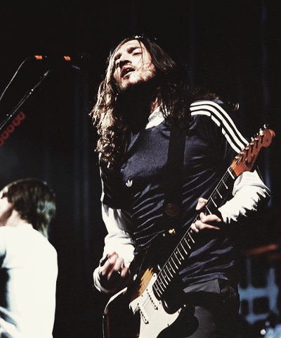
Frusciante miał duży wpływ na styl tego albumu, komponując większą część muzyki. Okres trwania trasy koncertowej promującej „By the Way” był dla Johna niezwykle pracowity i twórczy. Stworzył wówczas ogromną ilość materiału i 24 lutego 2004 roku wydał płytę „Shadows Collide With People”, a 22 czerwca tego roku „The Will to Death” rozpoczynając tym albumem cykl „6 albumów w 6 miesięcy”. Wówczas to, w ciągu pół roku pokazał nam cały zakres swoich możliwości, przeszedł przez różne stylistyki i zagrał z różnymi muzykami, co świadczy o szerokich zainteresowaniach muzycznych i umiejętnościach Frusciante. W tym czasie wraz z Joshem Klinghoffer’em i Joe Lally’m z zespołu Fugazi
tworzą projekt pod nazwą Ataxia, który w ramach cyklu sześciu płyt 10 sierpnia 2004 roku wydaje „ Automatic Writing”. W 2007 roku wydana zostanie jeszcze druga płyta tego projektu „AW II”. Nagrania do tych dwóch płyt powstały podczas 2 tygodni istnienia grupy. Zagrano jeszcze dwa koncerty w hollywoodzkim Knitting Factory po czym formację rozwiązano.
W kolejnych miesiącach ukazały się jeszcze: „DC EP” (14 września), „Inside of Emptiness” (26 października), wraz z Joshem Klinghoffer’em „A Sphere in the Heart of Silence” (23 listopada) i zamykająca cykl sześciu płyt „Curtains” (1 lutego 2005).
W 2004 roku Frusciante współpracował również z Vincentem Gallo. Muzyk stworzył pięć kompozycji, które znalazły się na soundtracku do jego kontrowersyjnego filmu „The Brown Bunny”. Od początku swojej kariery muzycznej Frusciante wspierał wielu różnych artystów m.in. Johnny Cash’a, Davida Gahan’a, Glenn’a Hughes’a, Perry Farrell’a, Wu-Tang Clan. Przyjaźń z Omarem Rodríguez-Lopez’em zaowocowała jego udziałem w nagraniach na płytach zespołu The Mars Volta i dała początek dłuższej współpracy przy kolejnych płytach Omara, a przyjaźń z Joshem Klinghoffer’em daje odzwierciedlenie w ich wspólnej pracy na wielu płytach Johna.
Na początku 2005 roku Frusciante wraz z zespołem Red Hot Chili Peppers rozpoczął prace nad kolejnym albumem grupy, a zarazem ostatnim, w nagraniu którego brał udział, jako członek zespołu. „Stadium Arcadium”, który został wydany w 2006 roku i jako pierwszy w historii grupy
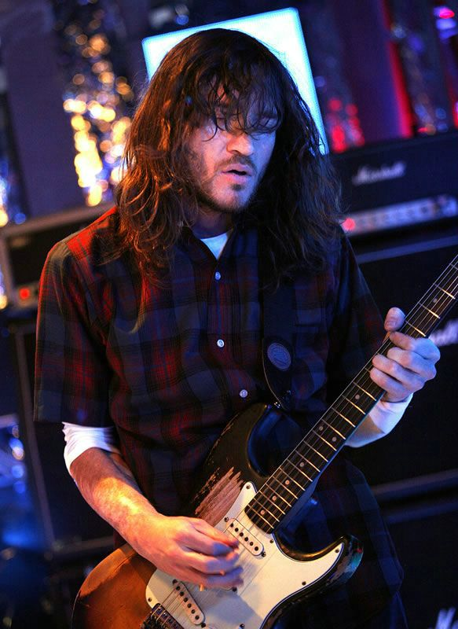
uplasował się na 1. miejscu listyBillboard Hot 100 cechuje iście hendrixowska gra gitarowa Frusciante, który zmienił swoje spojrzenie na grę i zaczął wysuwać na pierwszy plan solówki, potwierdzając tym doskonałą formę jako gitarzysty a także swój znakomity zmysł aranżacyjny i kompozytorski.
„Zrezygnowałem z nakładania na siebie ograniczeń. Chciałem by gitarowy blask przepływał przeze mnie w możliwie najjaśniejszy sposób” – mówił w wywiadzie dla „Teraz Rock”.
Po zakończeniu długiej i męczącej trasy koncertowej promującej album „Stadium Arcadium” w 2008 roku Anthony Kiedis ogłosił przerwę w działalności zespołu.
W tym czasie John Frusciante po raz drugi opuścił zespół Red Hot Chili Peppers, co oficjalnie potwierdził w 2009 roku.
20 stycznia 2009 roku wydaje dziewiąty solowy album „The Empyrean”. W przygotowaniu tego albumu wspomagali Johna przyjaciele muzyka Flea, Josh Klinghoffer i Johnny Marr , gościnnie na płycie pojawili się także Sonus Quartet oraz The New Dimension Singers.
Jest to pierwszy koncepcyjny album Frusciante, płyta bardzo osobista opowiadająca nam historię wzlotów i upadków muzyka, szukającego celu i tytułowego Empyrean. Muzycznie i lirycznie jest to dzieło wybitne, niezwykle subtelne i klimatyczne, potwierdzające jego genialny talent kompozytorski.
Po tym jak w Internecie zaczęły pojawiły się pogłoski o tym, że John ponownie opuścił zespół artysta oficjalnie to potwierdził 17 grudnia 2009 na swoim profilu myspace:
W ciągu ostatnich 12 lat, zmieniłem się jako osoba i artysta, do tego stopnia, że tworzenie tego co zrobiłem z zespołem byłoby sprzeczne z moim charakterem. Nie było do wyboru innej opcji. I po prostu będę tym, czym jestem, i będę robić to co chcę zrobić.
Chcę, aby wszyscy zrozumieli, że jestem wolnym artystą.
John opierając się pokusie kontynuowania kariery gwiazdy rocka postanowił dalej samodzielnie tworzyć, argumentując swoją decyzję zmianą kierunku w sztuce. Nie był w stanie dalej grać z zespołem, z którym muzycznie osiągnął już wszystko co mógł, a on sam bardzo już odbiegł od ich stylu i nie był zainteresowany tradycyjnym sposobem tworzenia. Jak bardzo zmienił się Frusciante jako gitarzysta możemy usłyszeć w utworach grupy Swahili Blonde, w nagraniach której uczestniczył wspomagając swoją obecną żonę Nicole Turley, z którą 31. lipca 2011 roku zawarł związek małżeński.
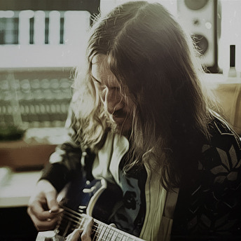
W tym czasie wziął udział w eksperymentalnym projekcie Speed Dealer Moms. Dwa nagrania muzyki elektronicznej, które powstały podczas jamów tej grupy ukazały się 6 grudnia 2010 roku w formie EPki.
Kontynuacja współpracy z Omarem Rodriguez’em – Lopez’em zaowocowała wydaniem dwóch ciekawych płyt, „Omar Rodriguez Lopez & John Frusciante” nagrana w duecie z przyjacielem, zawiera siedem utworów instrumentalnych muzyki improwizowanej i rocka progresywnego oraz „Sepulcros de Miel” nagrana jako Omar Rodriguez Lopez Quartet, zawierająca również utwory instrumentalne. W tej drugiej obu muzyków wspomagali koledzy z Mars Volty. Płyty zostały wydane w limitowanej liczbie w formie analogowej, a także zostały udostępnione do pobrania za darmo lub za dowolną kwotę. Dochód zebrany w ten sposób zasilił konto pozarządowej organizacji „Keep Music In Schools”. W ten sposób John wspiera charytatywnie różne organizacje, zresztą nie po raz pierwszy angażuje się w taką formę pomocy.
John Frusciante wsparł również Omara zostając producentem wykonawczym jego debiutanckiego filmu „The Sentimental Engine Slayer”, który był wyświetlany m.in. na Międzynarodowym Festiwalu Filmowym w Rotterdamie oraz Warszawskim Festiwalu Filmowym zbierając pozytywne recenzje. W 2009 roku artysta skomponował także muzykę do dokumentalnego filmu „Little Joe”, opowiadającego o życiu aktora Joe Dallesandro.
Kiedy w serwisach muzycznych zaczęły pojawiać się informacje o przygotowywanym do wydania kolejnym albumie Johna Frusciante, wielbiciele jego talentu przygotowani byli na płytę o brzmieniu podobnym poprzednim jego płytom, gdzie zawsze dominowały rockowe zasady. Nikt jednak się nie spodziewał tak dużej zmiany stylistyki, zafascynowanego elektroniką Johna, który wyrzekł się dawnych schematów, oraz tego wszystkiego, czego nauczył się jako muzyk rockowy. Na swojej stronie opisał dokładnie proces tworzenia nowego stylu, który nazwał progressive synthpopem. EPka „Letur-Lefr” , będąca zapowiedzią mającego ukazać się niebawem nowego albumu muzyka ukazała próbkę nowej koncepcji tworzenia. Pierwsze zetknięcie fanów z nową stylistyką Johna, z zupełnie niespodziewanymi dźwiękami wywołało zaskoczenie, a nawet oburzenie niektórych wiernych fanów.
24 września 2012 miała miejsce oficjalna premiera najnowszego albumu Frusciante „PBX Funicular Intaglio Zone„. Materiał umieszczony na tej płycie łączy aspekty wielu muzycznych stylów i potwierdza zapowiadany EPką całkowicie nowy świat Johna. Artysta po raz kolejny zaskoczył swoich fanów, ale nie wszyscy chyba byli gotowi na tak wielki zwrot w jego karierze solowej, na całkowicie nowy i niepowtarzalny styl. Nie jest to pierwszy kontakt Frusciante z muzyką elektroniczną, ale w najnowszych wydawnictwach ewidentnie ona dominuje.
„Letur-Lefr” i „PBX Funicular Intaglio Zone” ukazują całkiem nowy świat Frusciante, który nie boi się eksperymentować i tworzyć własne, nowe formy muzyczne, ucząc tym samym fanów otwartości na inne niż rock gatunki muzyczne.
W całej dyskografii John Frusciante prezentuje nam różne oblicza swojego muzycznego świata, przez co nie pozwala zaszufladkować się do jednego gatunku, a podkreśla, że jest wolnym artystą. Nagrał ogromną ilość materiału, eksperymentował z muzyką tworząc albumy, zarówno solowe jak i te z zespołem, z których niemal każdy reprezentuje inny styl muzyczny. Z każdym kolejnym albumem, czerpiąc z jakiegoś źródła niekończących się pokładów kreatywności, pokazał nam w pełni swój niesamowity talent kompozytorski i to jak genialnym jest twórcą. Jego solowe dokonania są specyficzne, niepowtarzalne, wymagają skupienia i uwagi słuchacza. Prostymi środkami buduje piękne i szczere utwory, oparte na emocjach co sprawia, że do tych płyt chce się wracać. Pewien mistycyzm tych utworów sprawił, że to właśnie nimi Frusciante zyskał sobie uwagę, uznanie i miłość tysięcy fanów na świecie.
Autor: Paweł Hydzik
Edycja i oprawa graficzna: Marcin Rudnik
Źródła: Wikipedia
Wywiady i artykuły internetowe
Wywiady i artykuły prasowe – „Gitarzysta”, „Teraz Rock”